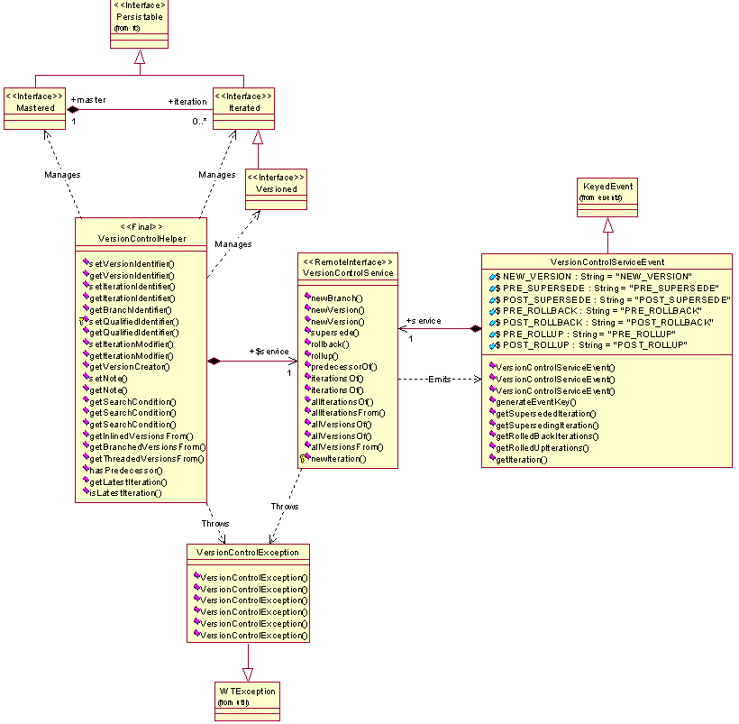
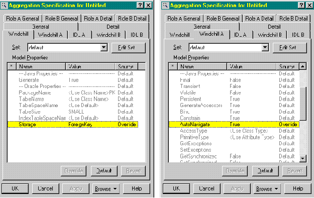
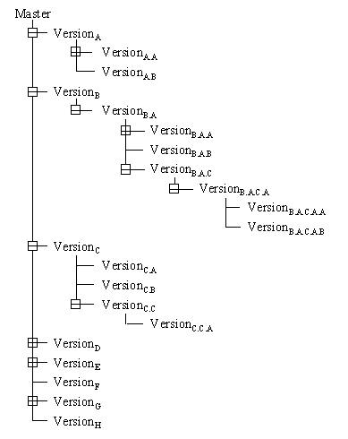
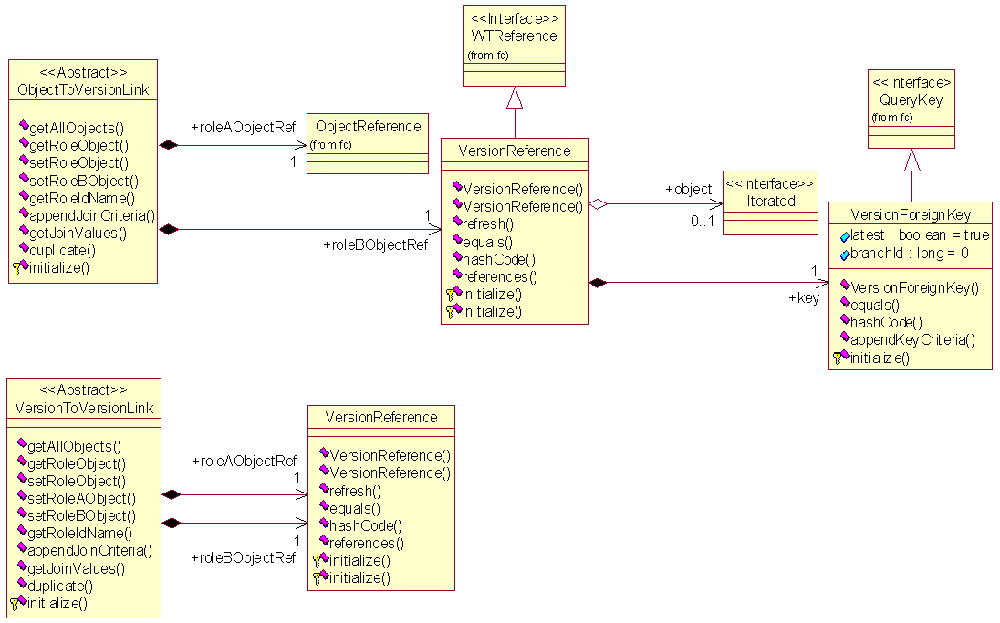

See: Description
| Interface | Description |
|---|---|
| _AdHocStringVersioned | |
| _Iterated | |
| AdHocStringVersioned |
Plug-n-play interface used to indicate that the object is versioned in
an ad-hoc manner.
|
| Iterated |
Provides an abstraction of a plug-and-play component in conjunction with
the Mastered interface.
|
| Mastered |
Provides an abstraction of a plug-and-play component in conjunction with
the Iterated interface.
|
| OneOffVersioned |
One-off versions are versions exist out of the normal versioning schemes.
|
| Versionable |
Plug-n-play interface indicating that the object is versioned in some
manner, i.e.
|
| VersionControlService | |
| Versioned |
Provides an abstraction of a plug-and-play component in conjunction with
the Mastered and Iterated interfaces.
|
| Class | Description |
|---|---|
| _IterationState | |
| _MergeInfoLink | |
| _VersionControlConflictType | |
| _VersionControlResolutionType | |
| _VersionReference | |
| IterationIdentifier |
An identifier that uniquely labels an iteration.
|
| IterationState |
IterationState is a specialization of EnumeratedType to provide localizable
IterationState names.
|
| MergeInfoLink |
Link class which denotes the occurrence of a logical merge operation
wherein one version of an object was merged into another.
|
| ObjectToVersionLink |
The ObjectToVersionLink provides a binary type of link between a persistable
object (role A) and a version (role B).
|
| OneOffVersionIdentifier |
An identifier that uniquely labels a One Off Version.
|
| StandardVersionControlService |
Provides the standard implementation of server-side functionality as
defined by the
VersionControlService interface. |
| VersionControlConflictType |
Enumerated Type representing Version Control Conflicts.
|
| VersionControlHelper |
Provides access to the
VersionControlService Application Programming Interface (API) via the static reference
VersionControlHelper.service and several helper methods. |
| VersionControlResolutionType |
Enumerated Type representing Version Control Resolutions.
|
| VersionControlServiceEvent |
Provides a service specific event extended from KeyedEvent used in conjunction
with the standard implementation of the server-side functionality as
defined by the VersionControlService interface.
|
| VersionIdentifier |
An identifier that uniquely labels a version.
|
| VersionReference |
The VersionReference is a kind of reference to Iterated objects by means
of the overridden key.
|
| VersionToObjectLink |
The VersionToObjectLink provides a binary type of link between a version
object (role A) and a persistable object (role B).
|
| VersionToVersionLink |
The VersionToVersionLink provides a binary type of link between two versions.
|
| Exception | Description |
|---|---|
| VersionControlException |
Provides an abstraction of an abnormal occurrence or error in the usage
or processing of the iterating service.
|
The version control
service (wt.vc package) provides functionality to place versioned objects under
iterative change control and iterated objects under incremental change control.
Version control (VC) is typically regarded as a major and minor numbering
scheme along with a change control mechanism for configuration management. The
major number represents the iterative enterprise level significance of a
particular version or revision, and the minor number represents a less
significant incremental work in progress change.

Version
Control Model
The VC service
is designed to be a plug-and-play component in the Windchill system, which is
by default enabled to execute.
The VC service
is intended to be used for both client and server development. Business objects
asserted as being Versioned in the object model can be revised, branched, and
copied to new versions through the VC service's external interface. Business
objects asserted as being Iterated in the object model can be incrementally
changed by superseding the latest iteration, rolled back from a superseding
iteration to a superseded one, and rolled up from a superseded iteration to a superseding
one. Objects asserted as Iterated only can be neither revised, branched, nor
copied to new versions. With this design, version control allows for business
objects to be iterated only or versioned, which is iterated.
The generalized
association between Mastered and Iterated objects stipulates that if there is a
branch, a master must exist but zero to many iterations of that master can
exist. For iterations only, one and only one branch of development exists for
an iteration. For Versioned objects, one to many branches of development can
exist. For example, revisions and manufacturing views are separate branches of
development. The branch itself is not a mechanism but an implementation detail
of version control.
Additionally,
the association between the Mastered and Iterated interfaces is significant and
must be overridden between a concrete master subclass and either a concrete or
abstract iteration subclass. This association specifies that a master contains
its iterations but each iteration has a foreign key to its master by means of
an object reference, not a link. Also, the master should be auto navigated when
the iteration is retrieved from the database. This ensures that one SQL
statement fetches both the iteration and its master via a database view for
each concrete iteration subclass. See the figure below for the Windchill
properties on how to specify a foreign key, auto navigated association.

Foreign
Key and Auto-Navigate Properties
A business
object's master represents a version independent concept of some piece of
information. Typically, a master is the normalized identity common to all its
versions, which through time is not subject to change. Additionally, it is
often said the master represents the interface (for example, the form, fit, and
function) for the business object. A business object's version represents a
form or variant of the original business object.
A version is a
notational enterprise-level significant object where it is the focal point for
usage, and physically is the latest iteration in a branch of development.
Versions are identified by unique values within a series. A version can be
constructed as an in-lined or branched version from another version. The in-lined
versions can be thought of as being revised versions, whereas the branched
versions allow for parallel work against an object by different organizations
or people at the same time. In the reference implementation of Windchill, if a
version was identified by the letter A, then a revised version of it would be
identified as B and a branched version from it would be identified as A.A. The
revising and branching of versions has the effect of making a version tree
where the revisions add breadth and the branches add depth as shown in

Versions
A business
object's iteration holds the object's state and business qualifications. These
qualifications are used to form configuration specifications but in general
could be used as search criteria for ad hoc queries. Each iteration represents
the working history of a version. Incremental changes in the object,
represented by successive iterations, occur as the information is developed and
changed. The latest iteration (that is, the version) represents a development
branch's current implementation; the previous iterations are all history.
Iterations are identified by unique values within a series. Additionally,
unique fully-qualified identifiers can also identify iterations. These
fully-qualified identifiers show the history of a particular iteration as it
has been changed over time. In the reference implementation of Windchill, if an
iteration of version B was identified by the number 1, then a new iteration
would be identified as 2. Its fully-qualified identifier, assuming that version
B was constructed from iteration 9 of version A, would be A.9.B.2. This
identifier states that the latest iteration is at 2 and iteration 1 of version
B originated from iteration 9 of version A.
As shown in the
figure below, version control also provides specialized abstractions to support
the handling of the notional versions.

Version
Support Mechanisms
The ObjectToVersionLink
provides a binary type of link between a persistable object (role A) and a
version (role B). When used in navigating from the persistable object to its
associated version, only the latest iteration is found. Navigating from the version
to its associated persistable object acts a typical navigation, but is
applicable only from the latest iteration.
The
VersionToVersionLink provides a binary type of link between two versions.
Navigating between them is applicable only from the latest iteration on either
side, and results in finding the other side's latest iteration.
The underlying mechanisms
used by these two links are the VersionReference and VersionForeignKey. The
VersionReference is a kind of reference to Iterated objects by means of the
overridden key. This key is a foreign key to the latest iteration in a branch.
When the reference's object is retrieved, but is not in memory, a query is
performed to find the version and it is subsequently returned.
The Mastered interface
provides an abstraction of a plug-and-play component in conjunction with the
Iterated interface. The intent is that, in an object model, a business object
would assert that it is a master by inheriting (that is, it implements) the
Mastered interface. With this assertion, iterations can then be identified by
attributes in concrete masters (for example, name and number).
Note: Version control
does not require Mastered objects to have any iterations, but allows for many.
The Iterated
interface provides an abstraction of a plug-and-play component in conjunction
with the Mastered interface. The intent is that, in an object model, a business
object would assert that it is an iteration by inheriting (that is, it
implements) the Iterated interface. With this assertion, the iterations can
then be incrementally superseded, rolled back, and rolled up.
Note: Version control
requires Iterated objects to have one and only one master. This is a design
constraint in that foreign key associations that can be auto navigated (that
is, the association between a master and its iterations) are required to have
one side being of cardinality equal to one (1).
The Versioned
interface provides an abstraction of a plug-and-play component that is a kind
of Iterated object. The intent is that, in an object model, a business object
would assert that it is a version by inheriting (that is, it implements) the
Versioned interface. With this assertion, the business object can then be
revised, branched, and copied to new versions.
The VersionHelper
provides an abstraction as the API to the VC service. The API's methods can be
categorized as either local or remote invocations. The local methods are
getters of information, typically from cookies that are held in the business
object. The remote methods serve as wrappers to a service that promotes
server-side functionality.
The
VersionService provides an abstraction that specifies and promotes server-side
functionality as a service that is available remotely for use by a client. The
intent is that this interface defines all the necessary server-side
functionality for VC.
The
VersionServiceEvent provides an abstraction of a specialized keyed event used
by the VC service to signal other services that a VC activity is about to begin
or has occurred. This gives other services the opportunity in a plug-and-play
architecture to act accordingly on these events. Validation, vetoing, and post
processing are typical reactions to events.
The
VersionException provides an abstraction of an abnormal occurrence or error in
the usage or processing of the VC service. This exception can be localized
through a given resource bundle and other exceptions can be nested within it.
The most common occurrences of this exception is when an attempt is made to use
a business object incorrectly during a database insertion, modification,
deletion, or navigation.
As defined by the standard
VC service's access control rules, no constraints are placed on the access of
versioned objects. Furthermore, no constraints are placed on the access of
either mastered or iterated objects.
Note: Direct
manipulation or deletion of both masters and superseded iterations is currently
unsupported. All functions should be carried out on versions.
POST_SB_CHECKIN_EVENT
When a POST_SB_CHECKIN_EVENT event is emitted for Iterated objects, the VC service will set the derivedFrom to the same as the predecessor.
PRE_STORE
When a PRE_STORE event is emitted, the following is done by the VC service:
�
For OneOffVersioned objects, the next available value in the one-off series is assigned as the one-off identifier.�
�
For Iterated objects, the Master and ControlBranch objects are stored if they have not already been persisted.�
�
For Versioned objects, validates the new version is valid. This check will prevent a variety of invalid versioning cases, including creation out-of-sequence versions.�
�
For ObjectToVersionLink, VersionToObjectLink and VersionToVersionLink objects, validates that both roles have already been persisted.�
PRE_INSERT
When a PRE_INSERT event is emitted for a Versioned object, the VC service will validate the versions. This check will prevent a variety of invalid versioning cases, including creation out-of-sequence versions.
UPDATE
When an UPDATE event is emitted for a Versioned object, the VC service will validate the versions. This check will prevent a variety of invalid versioning cases, including creation out-of-sequence versions.
PRE_DELETE
When a PRE_DELETE event is emitted for an Iterated object, it is first validated whether or not it is appropriate to delete the iteration. Specifically, the iteration must either be the latest one in a branch, or must be in a state indicating that it is to be deleted, which only gets set by version control when it is deleting non-latest iterations as part of another operation such as rollback, rollup, and deleting an entire version.
POST_DELETE
When a POST_DELETE event is emitted, the following is done by the VC service:
�
For Mastered objects, all of its iterations are deleted.�
�
For Iterated objects, determine if it is the latest one on the branch. If so, delete all of the iterations in that branch. Otherwise, if it is not the latest iteration then [since it has already been deleted] fix the predecessor chaining.�
PRE_CHANGE_DOMAIN
When a PRE_CHANGE_DOMAIN event is emitted for Iterated object, the VC service will veto the domain change of any non-latest iterations.
POST_CHANGE_DOMAIN
When a POST_CHANGE_DOMAIN event is emitted for Iterated object, the VC service will update the domain of historical iterations.
POST_CHANGE_FOLDER
When a POST_CHANGE_FOLDER event is emitted for Iterated object, the VC service will update the domain and cabinet of historical iterations.
PRE_CHANGE_IDENTITY
When a PRE_CHANGE_IDENTITY event is emitted for a Mastered object, the VC service will perform an access check on the latest iterations of all versions of the Mastered objects.